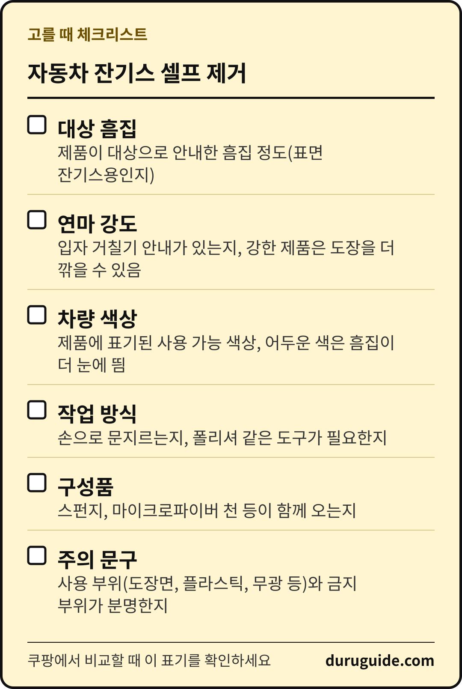

자동차 잔기스 셀프 제거, 스크래치 리무버로 되는 흠집과 안 되는 흠집
안 사도 되는 경우
세차 뒤 깨끗이 닦으니 사라지는 이물질이거나 다른 도료가 묻은 자국이라 문질러 지워진다면 리무버를 사지 않아도 돼요.
이런 상황이죠
주차장에서 문콕을 당하거나, 세차하다가 생기거나, 가방과 열쇠에 긁혀서 차 표면에 가는 선이 보이는 경우가 많아요. 멀리서는 안 보여도 햇빛이 비스듬히 들어오면 거슬리죠. 그런데 이런 흠집이 전부 스크래치 리무버로 지워지는 건 아니에요. 어떤 흠집인지부터 가려야 헛수고를 줄일 수 있어요.
왜 생기나
자동차 도장은 안쪽부터 바깥쪽으로 여러 겹이에요. 대략 철판, 하도(프라이머), 색을 내는 베이스, 맨 위의 투명한 클리어 코트 순서예요. 잔기스는 대부분 맨 위 클리어 코트의 표면만 긁힌 상태예요. 스크래치 리무버는 아주 고운 연마 입자로 표면을 살짝 갈아서 흠집의 단차를 줄이고 빛 반사를 고르게 하는 방식이에요. 즉 없던 도장을 채우는 게 아니라 표면을 다듬는 거예요. 그래서 클리어 코트를 넘어선 깊은 흠집은 리무버로 해결되지 않아요.
사기 전에 먼저 해볼 것
먼저 흠집이 어느 정도인지 확인하세요.
- 세차 후 물기를 닦고 봐요. 이물질이 선처럼 묻은 것일 수도 있어요. 깨끗이 닦으면 사라지기도 해요.
- 손톱 테스트를 해요. 흠집을 가로질러 손톱을 가볍게 움직여 보세요. 걸리지 않고 매끈하면 표면 잔기스일 가능성이 높아요. 손톱이 걸리면 클리어 코트를 지나 더 깊이 들어간 흠집일 수 있어요.
- 바닥 색을 봐요. 흠집 속이 흰색, 회색, 은색으로 보이면 하도나 철판이 드러난 거예요. 이 경우 리무버로는 안 되고, 터치업 도료나 도색 같은 다른 방법이 필요해요. 철판이 노출되면 녹이 생길 수 있으니 방치하지 않는 게 좋아요.
- 다른 색이 묻은 경우는 달라요. 다른 차나 기둥의 도료가 묻은 자국은 문질러 지워지는 경우가 있어요.
고를 때 체크리스트
| 확인 항목 | 보는 기준 |
|---|---|
| 대상 흠집 | 제품이 대상으로 안내한 흠집 정도(표면 잔기스용인지) |
| 연마 강도 | 입자 거칠기 안내가 있는지, 강한 제품은 도장을 더 깎을 수 있음 |
| 차량 색상 | 제품에 표기된 사용 가능 색상, 어두운 색은 흠집이 더 눈에 띔 |
| 작업 방식 | 손으로 문지르는지, 폴리셔 같은 도구가 필요한지 |
| 구성품 | 스펀지, 마이크로파이버 천 등이 함께 오는지 |
| 주의 문구 | 사용 부위(도장면, 플라스틱, 무광 등)와 금지 부위가 분명한지 |
무광이나 특수 도장은 문지르면 광택이 변할 수 있어 제품이 지원하는지 꼭 확인하세요. 처음에는 눈에 잘 띄지 않는 곳에서 작은 범위부터 시험하고, 한 번에 세게 문지르지 마세요. 사용법과 주의사항은 제품 안내를 따르는 게 가장 정확해요.
추천 제품 찾기
위 체크리스트의 대상 흠집 범위, 연마 강도, 지원 색상과 도장 종류를 기준으로 쿠팡에서 여러 제품을 비교해 보세요. 내 차 흠집이 손톱에 걸리는지 먼저 확인하고, 표면 잔기스용으로 안내된 제품 중에서 구성품과 사용 부위를 살펴보세요. 현재 가격은 쿠팡에서 확인해 주세요.

위 표의 표기를 비교해 보세요.
현재 가격은 쿠팡에서 확인해 주세요.
이 포스팅은 쿠팡 파트너스 활동의 일환으로, 이에 따른 일정액의 수수료를 제공받습니다.